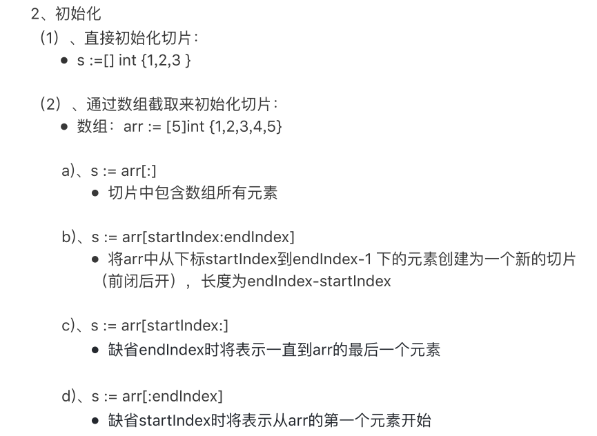

原文出处:本文由博客园博主小禾点点提供。
原文连接:https://www.cnblogs.com/jalja/p/11782966.html
原文连接:https://www.cnblogs.com/jalja/p/11782966.html
一、什么是切片
Go语言切片是对数组的抽象。
- Go数组的长度不可改变，在特定场景中这样的集合就不太适用，Go中提供了一种灵活，功能强悍的内置类型切片("动态数组")；
- 与数组相比切片的长度是不固定的，可以追加元素，在追加时可能使切片的容量增大。
- 切片本身没有任何数据，它们只是对现有数组的引用。
- 切片与数组相比，不需要设定长度，在[ ]中不用设定值，相对来说比较自由
- 从概念上面来说slice像一个结构体，这个结构体包含了三个元素：
切片的结构：
- 〇指针，指向数组中slice指定的开始位置
- 〇长度，SPslice的长度
- 〇最大长度，也就是slice开始位置到数组的最后位置的长度
二、切片的使用
切片的声明
s1 := make([]int, 5)
s2 := make([]int, 5, 7)
切片的初始化：

nums := []int{1, 2, 3, 4, 5}len()和cap()函数
1、 切片的长度是切片中元素的数量。
2、 切片的容量是从创建切片的索引开始的底层数组中元素的数量。
3、 切片是可索引的，并且可以由len()方法获取长度，切片提供了计算容量的方 法cap(),可以测量切片最长可以达到多少。[数组计算cap()结果与len()相同]
4、 切片实际的是获取数组的某一部分，len切片<=cap切片<=len数组


package main
import "fmt"
func main() {
s1 := make([]int, 5)
s2 := make([]int, 5, 7)
printSlice(s1) //length:5,cap=5,slice=[0 0 0 0 0]
printSlice(s2) //length:5,cap=7,slice=[0 0 0 0 0]
//创建切片
nums := []int{1, 2, 3, 4, 5}
printSlice(nums)
//从切片中截取小切片
nums1 := nums[1:4]
printSlice(nums1) //length:3,cap=4,slice=[2 3 4]
nums2 := nums[:3]
printSlice(nums2) //length:3,cap=5,slice=[1 2 3]
nums3 := nums[2:]
printSlice(nums3) //length:3,cap=3,slice=[3 4 5]
}
func printSlice(slc []int) {
fmt.Printf("length:%d,cap=%d,slice=%v \n", len(slc), cap(slc), slc)
}
三、切片的常用函数
(五）、append( ) 和 copy( )函数
1、函数append( ):
- •往切片中追加新元素
- •可以向 slice里面追加一个或者多个元素，也可以追加一个切片。
- • append函数会改变slice所引用的数组的内容，从而影响到引用同一数组的 其它slice。
- •当使用 append追加元素到切片时，如果容量不够（也就是(cap-len)== 0)，Go就会创建一个新的内存地址来储存元素（该方式效率较低）。
2、函数copy:*复制切片元素
- •将源切片中的元素复制到目标切片中，返回复制的元素的个数
- • copy方法是不会建立源切片与目标切片之间的联系。也就是两个切片不存 在联系，一个修改不影响另一个。
package main
import "fmt"
func main() {
//创建切片
nums := []int{1, 2, 3, 4, 5}
printSlice("nums", nums) //slice=nums,p=0xc00000c5d0,length:5,cap=5,slice=[1 2 3 4 5]
//append 追加元素
nums = append(nums, 10)
printSlice("nums", nums) //slice=nums,p=0xc000014230,length:6,cap=10,slice=[1 2 3 4 5 10]
a := []int{6, 7, 8, 9}
//追加数组
nums = append(nums, a...)
printSlice("nums", nums) //slice=nums,p=0xc000014230,length:10,cap=10,slice=[1 2 3 4 5 10 6 7 8 9]
//删除第一个元素
nums = nums[1:]
printSlice("nums", nums) //slice=nums,p=0xc000014238,length:9,cap=9,slice=[2 3 4 5 10 6 7 8 9]
//删除最后一个元素
nums = nums[:len(nums)-1]
printSlice("nums", nums) //slice=nums,p=0xc000014238,length:8,cap=9,slice=[2 3 4 5 10 6 7 8]
//删除中间的元素
b := int(len(nums) / 2)
nums = append(nums[:b], nums[b+1:]...)
printSlice("nums", nums) //slice=nums,p=0xc000014238,length:7,cap=9,slice=[2 3 4 5 6 7 8]
//切片copy
nums2 := make([]int, len(nums), cap(nums)*2)
//copy 的切片没有关联
copy(nums2, nums)
printSlice("nums2", nums2) //slice=nums,p=0xc000014238,length:7,cap=9,slice=[2 3 4 5 6 7 8]
}
func printSlice(name string, slc []int) {
fmt.Printf("slice=%v,p=%p,length:%d,cap=%d,slice=%v \n", name, slc, len(slc), cap(slc), slc)
}3、使用make创建切片
package main
import "fmt"
import "strconv"
func main() {
str := make([]string, 0, 16)
printSlice("str", str)
for i := 0; i < 5; i++ {
str = append(str, strconv.Itoa(i))
}
printSlice("str", str)
}
func printSlice(name string, slc []string) {
fmt.Printf("slice=%v,p=%p,length:%d,cap=%d,slice=%v \n", name, slc, len(slc), cap(slc), slc)
}